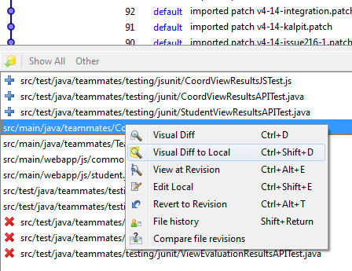

Table of Contents
- Project
- Design
- Infrastructure
- Setting Up
- Process
- UI guidelines
- Coding guidelines
- Testing guidelines
- Glossary
Project
Project Vision
Long term goal: Become the biggest student project in the worldBiggest = many contributors, many users, high LOC, evolving over a long period.
‘Big’ above implies an exceptionally high quality standard too because high quality is a necessity for the long-term survival of a big student project.
This project will also serve as a model and training ground for SE students who want to learn SE skills in the context of a non-trivial real software product.
Challenges
The project faces challenges in following areas.- Developers: All developers are novices and their involvement with the project is short term and part time.
- Code: Working with legacy code written by past developers is harder than writing from scratch.
- Testing: No dedicated QA team.
- Data: The data in the live system are confidential and developers are not allowed to see them. This makes troubleshooting harder.
- Releases: Frequent releases to live users requires us to maintain ‘production quality’ constantly.
-
Platform: TEAMMATES is running on Google App Engine cloud platform, which adds the following challenges.
- It is an emerging platform evolving rapidly. We have to keep up.
- It imposes various restrictions on the application.
- It charges us based on usage. We have to optimize usage.
- Software Engineering: As TEAMMATES serve as a model system for training students, it should also focus on applying good ‘software engineering’ techniques.
Principles
We apply these principles to meet the challenges stated above.- We keep moving forward, always: We release frequently, in weekly iterations. Every week, our product becomes better than the previous week. This means ‘go back and rewrite from scratch’ is only a last resort.
- We are agile: We are able to change the system quickly and with ease to match emerging requirements. We aim for minimal yet sufficient documentation.
- We defend our code with tests, fiercely: Since we practice shared code ownership, we have to make sure the code is not accidentally broken by others. We use fully automated regression testing. The testing automation level of this project is probably higher than 99% of the projects out there.
- We are ‘Gods’ of the few tools we use: We stick to a Minimal toolset. adding third-party tools and libraries to the project is done only if there is a STRONG justification. Only mature, stable, and well-supported tools should be considered. Once selected, we should know the tool very well to get the best out of it.
- We value quality more than functionality: i.e., our job is not to ‘anyhow get it to work’. The system should be good enough to be considered a ‘model’ software. Our code is of ‘unusually’ high quality: All code is reviewed before accepting.
- We know what we are doing: For us, it is not enough to know something is broken, we should also know why it is broken. It is not enough to get something working, we should know how we got it to work.
- We seek the best, not stop at the first: We do not settle for the first workable method to solve a problem. We study other ways of solving it and decide what is the best way for us.
- We take pains to save the team from pain: Whenever we had to spend effort in figuring out something, we refine code/documents so that others don’t have to go through the same pain. Whenever we figured out a less painful way of doing something, we make sure everyone in the team learn it too.
Design
Architecture

TEAMMATES is a Web app that runs on Google App Engine (GAE) cloud platform. Here is an overview of the main components.
- UI: The UI seen by users consists of Web pages containing HTML, CSS (for styling) and JavaScripts (for client-side interactions such as sorting, input validation etc.). This UI is generated by Java Server Pages (JSP) and Java Servlets residing on the server. Requests are sent to the server over normal HTTP. In future, AJAX may be used sparingly to fetch data from the server asynchronously.
- Logic: The main logic of the app is in Java POJOs (Plain Old Java Objects). Some automated tasks are implemented as Servlets.
- Storage: Storage uses the persistence framework provided by GAE ‘datastore’. While the datastore is a noSQL database, we use it in SQL fashion via a JDO wrapper and GQL (a datastore-specific SQL variant).
- Test Driver: TEAMMATES makes heavy use of automated regression testing. JUnit is used for Java unit testing and QUnit for Javascript unit testing. We use Selenium Web Driver to automate UI testing. Test Driver can access the application directly to set up test data. We use JSON format to transmit such data to the application.
- Common: The Common component contains utility code used across the application.

Notes:
- [logic] - [ui::view] - [ui::controller] represent an application of Model-View-Controller pattern.
- ui::view package is not a Java package. It represents jsp, html, js and css files.
UI

Request Flow
Request from the browser will go through following steps:
- Received by the GAE server
- Forwarded to our custom filters in according to the order as specified in web.xml. In our case this would be DatastoreFilter and LoginFilter. For the purpose of this explanation, we only concern about the LoginFilter, which will forward any request from not-logged-in-user to the login page. If the request is from logged in user, then it will proceed according to the URL.
- Depending on the URL, it will be handled by its respective Servlet (e.g., CoordHomeServlet, CoordCourseDeleteServlet, etc)
- The servlet will process everything related to the logic (e.g., accessing datastore, modifying datastore, etc), then it will create respective Helper object and store relevant data inside that object (e.g., student list, course list, evaluation data, etc)
- The respective Helper object then will be passed to the respective JSP page.
- The JSP page will then render the page according to the data inside the Helper object.
- The response will then be sent back to the browser, which will render the page.
Process flow in Servlets
Since the request will undergo mostly similar processing steps, the request will first be processed in the general-purpose abstract class ActionServlet (this is an application of the Template Method pattern). Inside that class, these things will happen in order:- Check whether the request method is POST or GET, store it in a variable isPost.
- Call abstract instantiateHelper method, which should have been overridden to create respective Helper object.
- Call concrete prepareHelper method, which will setup common data inside the Helper object: Logic object, UserData object, requested user (for masquerade mode), redirect URL, status message and error status. This method will also set the masquerade mode accordingly.
- It will call the abstract doAction method, which should have been overridden to contain the main action for each servlet. This is the place for highest-level error handling before the response is returned to the Broswer.
- It will finally call doCreateResponse method, which redirects the request with appropriate method: either forward the request using requestDispatcher to the page specified in getDefaultForwardUrl or redirect the request to the page as specified in variable redirectUrl.
The UI consist of following pages:
Functional pages.
These pages represent the core functionality of the system. In the brackets are the actions available in that page.- login.jsp
- logout.jsp
- adminHome (create coordinator)
- coordHome (delete course, remind evaluation, [un]publish evaluation, delete evaluation)
- coordCourse (add course, delete course)
- coordCourseEnroll (enroll students)
- coordCourseView (remind student to join course, delete student)
- coordCourseStudentDetails (edit student details)
- coordCourseStudentEdit
- coordEval (add evaluation, remind evaluation, [un]publish evaluation, delete evaluation)
- coordEvalEdit (edit evaluation details)
- coordEvalResults
- coordEvalSubmissionView - view the submission from and for that student
- coordEvalSubmissionEdit
- studentHome (join course)
- studentCourseDetails - the content is about team details
- studentEvalEdit - also used for submitting evaluation
- studentEvalResults
e.g., adminHome can be reached by http://teammatesv4.appspot.com/page/adminHome and is handled by AdminHomeServlet.java and adminHome.jsp
Only logged in users can access these pages. LoginFilter.java is used to redirect not-logged-in users to a login page.
Special-purpose pages
These pages provide peripheral functionality.- studentHelpPage (an html page)
- coordHelpPage (an html page)
- error pages (errorPage.jsp, mobile.jsp, oldIE.jsp, etc.)
These pages are not access-controlled.
Website pages
These are the static pages that forms the product website (not the product itself).- contact.html, about.html etc.
HTML5
All webpages have a HTML5 doctype. This is because HTML5 is the future and more browsers are becoming more and more HTML5 compliant. All major browsers (IE, Firefox, Chrome, Safari) support HTML5 already. However, to ensure browser compatibility for older browsers, new HTML5 tags are not used in the website. Such tags include <canvas>, <video> etc. XHTML5 is not used because of the lack of support in IE, and the webpages are first and foremost HTML documents rather than XML documents. However, we will enforce certain XML standards ourselves to ensure that the webpage is also a well-formed XML document.XHTML1.0/1.1 doctype is not used because there is no foreseeable support for this and it will not be developed any further. HTML 4.01 is not used as well, since the HTML5 doctype is already backward compatible. Using the HTML5 doctype will ensure that the major browsers will render the website in their Standards Mode rather than the Quirks Mode.
Further information can be found in our HTML Style Guide
Logic
The Logic component handles the business logic of TEAMMATES.It acts as the Model component of the MVC pattern which is interfaced to UI component through a thin facade class. Internally, logic is separated into 3 different storage classes and communicates with the DB component by performing operations individually or collectively.

Logic API
Represented by Logic.java and BackDoorServlet.java- Logic: For the use of UI. Logic class acts as a single interface facade between UI (servlets) and internal storage classes (*Storage and *Db)
- BackDoorLogic: For the use of TestDriver (via BackDoorServlet)
Policies
These are the general policies followed by Logic.Null values should not be used in any places, except in certain edit operations where values which are null are not editted.
Authentication
Calls received by Logic are authenticated against logged in user’s privileges.Calls received by BackDoorServlet are authenticated using the ‘backdoor key’. Backdoor key is a string known only to the owner of the application.
Creating entities
Null parameters: Throws an assertion error.Entity already exists: Throws EntityAlreadyExists exception (escalated from DB level)
In the case of creating Evaluations, Submission entities are automatically created with respect the students enrolled in the course, or when a student changes teams. Developers should not allow Submissions to be manually created.
Retrieving entities
Null parameters: Throws an assertion errorEntity not found:
-Returns null if the target entity not found. This way, read operations can be used easily for checking the existence of an entity.
-Throws EntityDoesNotExists exception if a parent entity of a target entity is not found e.g., trying to list students of a non-existent course
Editing entities
Primary keys cannot be edited except: Student.emailKeepExistingPolicy: the new value of an optional attribute is specified as null or set to “Uninitialized”, the existing value will prevail. {This is not a good policy. To be reconsidered}
Null parameters: Throws an assertion error if that parameter cannot be null. Optional attributes follow KeepExistingPolicy
Entity not found: Throws EntityDoesNotExistException exception
Invalid parameters: Throws InvalidParametersException
Deleting entities
Null parameters: Throws an assertion errorFailDeleteSilentlyPolicy: In general, delete operation do not throw exceptions if the target entity does not exist. Instead, it logs a warning. This is because an entity could get deleted by one user while another user is trying to delete it at the same time. In any case, if it does not exist, it is as good as deleted.
Cascade policy: When a parent entity is deleted, entities that have referential integrity with the deleted entity should also be deleted. E.g deleting a coordinator deletes all courses under the coordinator, which also deletes all evaluations and submissions related to the course.
Cascade logic:
- Coordinator : delete all courses and cascade onwards
- Course : delete all students, evaluations and cascade onwards
- Student : delete all submissions
- Evaluation: delete all submissions
- Submission : no cascade (this entity can only be deleted by cascades)
Storage
The DB component performs CRUD operations on data entities individually. It hides the datastore from logic component. It is expected to contain minimal logic beyond what is directly relevant to CRUD operations.

Cascade logic is currently handled by Logic component.
Storage::Entity classes should not be visible outside this component to prevent accidental modification to the entity's attributes.
Instead, a corresponding non-persistent EntityData object is returned, where values can be get and set easily without any impact on the persistent data copy.
Storage API
Represented by classes in storage::apiPolicies
Add and Delete operations try to wait until data is persisted in the datastore before returning. This is not enough to compensate for eventual consistency involving multiple servers (i.e., in the production server). However, it is expected to avoid test failures caused by eventual consistency in dev server.Implementation of Transaction Control has been decided against due to limitations of GAE environment and the nature of our persistent data implementation. Please see TEAMMATES Problems and Solutions documentation for more information.
Null values should not be used in any places, except in certain edit operations where values which are null are not editted.
Create:
- Attempt to create an entity that exists: Throw EntityAlreadyExists exception
- Attempt to create an entity with invalid data: assertion thrown (should not occur at this level)
Retrieve:
- Attempt to retrieve an entity that does not exist: Return null
Update:
- Attempt to update an entity that does not exist: assertion thrown (should not occur at this level)
- Attempt to update an entity with invalid data: assertion thrown (should not occur at this level)
Delete:
- Attempt to delete an entity that does not exist: no action
Common

The Common component contains common utilities used across TEAMMATES.
common::Common.java currently holds a vast collection of common constants and functions. This is a good candidate for breaking into smaller classes.
common::datatransfer package contains lightweight classes for transferring data among components. They can be combined in various ways to transfer structured data between components. Given below are three examples.
(a) Test Driver can use the DataBundle in this manner to send an arbitrary number of objects to be persisted in the database.
(b) This structure can be used to send results of an evaluation (e.g., when showing an evaluation report to a coordinator)
(c) This structure can be used to transfer data belonging to a coordinator (e.g., when constructing the home page for a coordinator).
For convenience, these classes use public variables for data. This is not a good practice as it contravenes OO principles and increases the risk of invalid data. This strategy is to be reconsidered at a later date.
TestDriver
This component automates the testing of TEAMMATES.
We have two kinds of automated test cases:
- Component tests: Some of these are pure unit tests (i.e., test one component in isolation) while others are integration tests that tests units as well as integration of units with each other.
AllJsTests.java is for unit testing JavaScript code. - UI tests: These focus on testing the UI and the integration of all components with the UI.
|---------acceptance tests----|---system tests----|-----integration tests-----|-------unit tests----------|
|---------manual testing-------------|-------------UI tests------|-------component tests ----------------|
Notable classes:
- *Suite.java classes are containers for test cases, used to run test cases in batch mode.
-
BrowserInstance.java represents
the UI of the application. It is a wrapper around Selenium
Web Driver. It allows the test driver to simulate user
actions on the TEAMMATES UI. This class is a good candidate
for further decomposition as it is too big at the moment.
Notable methods and data members (IMPORTANT):- get[entity]RowID: to find the rowID of some specific entity on a specific page
- get[entity]LinkLocator: to retrieve the locator (a By object) of an entity. This method usually have two versions, one accepting primary key to that entity, the other accepting rowID. The basic form is the one accepting rowID
- Data member of By type: gives the locator of an entity which does not require any parameter to be retrieved (such as input textbox for course ID in creating course)
- click[entity]: methods to click on some object on the page. This is only convenience method as it can be replaced by calling click(By locator) using locator as retrieved from the get*LinkLocator.
- count[entity]: to count the number of that entity as appeared in the page (e.g., number of students, number of evaluations, etc)
- get[entity] and studentGet[entity]: method to retrieve some information on the page. For some cases, this is only convenience method as it can be replaced by calling getText(By locator) with respective locator, for others, it uses more sophisticated method to retrieve the data easier and faster.
- Methods related to form-filling such as fillString, fillInCourseID, addEvaluation, addCourse. These methods are there to make filling forms easier, as well as giving model to new developers on how to fill the forms.
- There are also some verification methods to test the page HTML.
- BackDoor.java allows test driver to communicate with the TEAMMATES datastore. It hides from Test Driver the complexity of HTTP communication that is required to interact with the server.
- EmailAccount.java allows Test Driver to query email accounts of test users (e.g., to verify the receipt of emails sent by TEAMMATES)
- TestProperties.java represents configuration values in test.properties and appengine-web.xml that are useful for testing. e.g., the app version number that we expect to see in the UI footer.
Config points
There are several files used to configure various aspects of the system.- build.properties : This is the main general purpose configuration file.
- logging.properties : Configuration for java.util.logging users.
- log4j.properties : Configuration for log4j users. Not used by us.
- test.properties : Contains configuration values for the test driver.
- appengine-web.xml : Contains configuration for deploying the application on app engine.
- web.xml : This is the configurations for the webserver. It specifies servlets to run, mapping from URLs to servlets/JSPs, security constraints, etc.
- cron.xml : This specifies cron jobs to run.
- queue.xml : Specifies configuration of task queues.
- jdoconfig.xml : Specifies the JDO configuration.
- persistence.xml : auto-generated.
Infrastructure
Knowledge base
- Developer manual (i.e. DevMan)
- System specification (i.e. Spec)
- Problems and Solutions (i.e. PandS) : Problems encountered, solutions considered, rationale for selection etc.
- Project Meeting Minutes (i.e. Minutes)
- Version History (i.e. History)
- Google Group for project team http://groups.google.com/group/teammates-dev
- Repo and Issue Tracker : teammatesPES.googlecode.com {PES = Peer Evaluation System} {copy of old repo}
- Live site: http://teammatesv4.appspot.com
Tools and Technologies
Google App Engine
Alternatives: AWS, AzureRationale:
- GAE is a PaaS (Platform as a Service). This means much of the scaling up is handled by GAE rather than us.
- GAE free tier is more convenient to use than AWS.
Java
Alternatives: GAE supports only Java and Python.Rationale: Java was chosen because it is more widely used than Python.
Learning resources:
JavaScript
Learning resources:- Mozilla Developer Network’s JavaScript Guide:
https://developer.mozilla.org/en/JavaScript/Guide - A shorter recap, also from Mozilla
https://developer.mozilla.org/en/A_re-introduction_to_JavaScript - Some JavaScript Resources for Web App Developers
HTML, CSS
Alternatives:Rationale:
Learning resources:
AJAX
Alternatives: -Rationale: Provides smooth experience to users
Learning resources: http://api.jquery.com/jQuery.ajax/
JSP/Servlets
Alternatives:Rationale:
Learning resources:
Best practice and tutorial here
JUnit
Alternatives:Rationale:
Learning resources:
- Beginner tutorial: http://www.vogella.com/articles/JUnit/article.html
QUnit
Alternatives:Rationale:
Learning resources:
Selenium
Alternatives:Rationale: One of the most commonly used library to do UI test
Learning resources: http://seleniumhq.org/docs/06_test_design_considerations.html
JSON
Alternatives:Rationale:
Learning resources:
- JSON explained: http://everything.explained.at/JSON/
JQuery
Alternatives:Rationale:
Learning resources:
Alternatives:
Rationale:
Learning resources:
Eclipse
Alternatives:Rationale:
Learning resources:
- Keyboard shortcuts http://www.allapplabs.com/eclipse/eclipse_shortcuts.htm
- http://www.summa-tech.com/blog/2009/05/19/top-10-not-so-popular-eclipse-shortcuts/
- Use Ctrl+F to auto-format code. But before using that, enable the @formatter:off annotation (see here) so that segments marked with those annotations will not be formatted.
- Open a file without navigating the project explorer: Press Ctrl+Shift+R and start typing the name of the file
- To show line numbers: Window → Preferences → General → TextEditors → Select ‘Show line numbers’
- To show a guide line at 80 char limit:
- General→Editors-TextEditors, Activate "Show print margin" and enter 80 in "Print margin column".
- Configure Ctrl+F11 to launch the last launched class instead of the class currently in focus (default) http://eclipseone.wordpress.com/2010/01/15/always-rundebug-the-last-launched-class-instead-of-the-selected-one-in-eclipse/#more-622
- This will make creating Java string literals easier: Preferences/Java/Editor/Typing/ "Escape text when pasting into a string literal"
- How to enable JavaScript editing functionality (e.g., refactoring) within a Java project: http://steve.blogs.loeppky.com/2010/10/javascript-validation-in-java-project.html
-
Keyboard shortcuts
- to bring up the List of available shortcuts Ctrl+Shift+L
- to switch tabs: Ctrl + Page Up, Ctrl + Page Dn
Hg
Alternatives: SVN, GitRationale: Have a good UI (Hg Workspace), compared to SVN and Git that enables easy history viewing
Learning resources:
- A good place to start learning HG: Hg Init by Joel Spolsky
- More comprehensive guide: Mercurial: The Definitive Guide by Bryan O'Sullivan
- MDN documentation on Hg Queue
- http://mercurial.selenic.com/wiki/Workflows
- http://stevelosh.com/blog/2009/08/a-guide-to-branching-in-mercurial/
- Saving username/password
http://stackoverflow.com/questions/2584407/how-to-save-username-and-password-with-mercurial - Detecting files renamed externally: When you manually rename a file or a file is renamed by an Eclipse refactoring, hg usually consider it as removing of one file and adding of another. However, you can use the addremove command to let hg auto-detect renaming of files. Here’s more
http://hgtip.com/tips/advanced/2009-09-30-detecting-renames-automatically/ -
[On Windows+TortoiseHg] To do a visual (i.e manual) merge/diff of current file to previous version, open TortoiseHg workbench, go to the revision that you want to merge with, right-click on the file name and chose ‘Visual diff to local’)

GoogleCode
Alternatives:Rationale:
Learning resources:
- Issue tracker help http://code.google.com/p/support/wiki/IssueTracker
Alternatives:
- Apache Tika : Seems an overkill, but from a reputed source.
Learning resources:
Potentially useful
- JSFiddle: Online tool to experiment with JavaScript, CSS, HTML: http://jsfiddle.net
- Firebug : Integrates with Firefox to put some web development tools to edit, debug, and monitor CSS, HTML, and JavaScript live in any web page. http://getfirebug.com
- JSHint: To check quality of JavaScript code http://www.jshint.com
- Closure templates: https://developers.google.com/closure/templates/
- Objectify-appengine: code.google.com/p/objectify-appengine/
- YAML?
- Mylyn
- Bootstrap?
- JMockit
- GAE endpoints
- ScriptCover - Javascript coverage tool
- Joda: calendar replacement
- Rietveld http://code.google.com/p/rietveld/
- Code analyzers
- CloudCover (to run unit tests on the cloud) http://code.google.com/p/cloudcover/
- Expression builder pattern http://martinfowler.com/bliki/ExpressionBuilder.html
- Groovy
- Curl: Command line web access tool, may be useful for testing?
- Eclipse Json editor plugin http://sourceforge.net/projects/eclipsejsonedit/
- Google’s code pro analytix https://developers.google.com/java-dev-tools/codepro/doc/
- Excel button http://blogs.office.com/b/microsoft-excel/archive/2012/08/02/the-excel-button-bringing-excel-everywhere.aspx
- JDepend
- Testing tools: Fitness, cucumber, RobotFX, robot framework, cuke4duke, Jbehave, Watir
Setting Up
Prerequisites
- Install Mercurial from http://mercurial.selenic.com/
- Download Eclipse IDE for Java EE Developers from http://www.eclipse.org/downloads/
- Install Google App Engine plug-in for Eclipse and SDK from http://code.google.com/eclipse/docs/download.html. Do not install GWT plugin as it might interfere with the GAE plugin.
- If your Firefox is higher than version 12, downgrade to Firefox 12.0 from here {The web driver for later Firefox is significantly slower than the one used for FF12}
- If your java version is later than 1.6, set Eclipse Java compliance level to 1.6 (GAE plugin does not support versions higher than 1.6).
Windows → Preferences → Java → Compiler → Set compliance level → 1.6
Setting up the dev server
‘Dev server’ means running the server in localhost mode.- Clone source code from:https://code.google.com/p/teammates-release/
-
Create config files (these are not under revision control because their content vary from developer to developer).
- src/main/resources/build.properties
Use build.template.properties as a template (i.e. copy → paste → rename)
For dev server testing, property values can remain as they are. You need to change values when you deploy to appspot remote server. - src/test/resources/test.properties
Create it using test.template.properties (in the same folder). For dev server testing, property values can remain as they are. - src/main/webapp/WEB-INF/appengine-web.xml
Create using appengine-web.template.xml. For dev server testing, property values can remain as they are.
- src/main/resources/build.properties
-
Open Eclipse and import → general → ‘existing projects into workspace’ (see the Troubleshooting section if have any problem). After the importing is complete, do the following steps.
-
Go to Properties→Google→Web application
- Select 'this project has a WAR directory'.
- Browse to src/main/webapp.
- Select 'Launch and deploy from this directory'
-
Go to Properties→Google→App engine
- Select ‘use Google App Engine’
-
Go to Properties → Google → App Engine → ORM
- Here, you should specify where are your Entity classes so that they can be enhanced by the DataNucleus Enhancer tool. Add this folder to the list src/main/java/teammates/storage/entity/*.java
- Remove all other folders. That way, DataNucleus Enhancer runs only when you modify your entity classes.
- If eclipse alters .classpath file during above steps, revert it back to original and refresh the project.
- Click ‘Run’ → ‘Run as web application’, and browse to src/main/webapp for the location of the WAR file(can remove run configuration to redo this step). You may have to create a new ‘run configuration’ if one does not exist. The configuration is in the Run Configurations → Arguments tab → Program arguments.
-
Go to Properties→Google→Web application
- After the dev server is running (i.e., this message appears on console “The server is running at http://localhost:8888/”), you can run AllTestsSuite.java to confirm the app works as expected.
Deploying to appspot
-
Create your own app on GAE
suggested app name: teammates-name (replace the name with your own name). The URL of the app will be like this.
http://teammates-name.appspot.com
-
Modify configuration files.
- src/main/resources/build.properties
Follow instructions in the file itself. - src/test/resources/test.properties
Get from a project member details of gmail accounts used for testing. Edit the file as instructed in comments. - src/main/webapp/WEB-INF/appengine-web.xml
Modify to match app name and app id of your own app.
- src/main/resources/build.properties
-
Deploy app to a appspot
- Choose ‘Deploy to app engine’ from eclipse and follow the steps.
- Wait until you see this message in Eclipse console “Deployment completed successfully”
- Go to appengine dashboard
https://appengine.google.com/dashboard?&app_id=teammates-name - Click “Versions” under “Main” menu on the left bar.
- Set the version you deployed as the ‘default’.
- You can run the tests again against the deployed app (modify test.properties so that tests execute against the deployed app and not the dev server).
Note that GAE daily quota will be exhausted after 2-3 runs of the full test suite.
To add more coordinators
- Go to http://appURL/page/adminHome
- Log in using your Google ID. If this is the local server, enter any email address, but remember to check the ‘log in as administrator’ check box.
-
Enter credentials for a coordinator. e.g.,
Google id: teammates.coord
Name: Coordinator
Email: teammates.coord@gmail.com
Troubleshooting
- ERROR: Eclipse complains about FileWriter and ConsoleHandler e.g. java.io.FileWriter is not supported by Google App Engine's Java runtime environment
SOLUTION: These are OK because the offending files belong to test driver and will not be deployed to GAE. Choose to ‘Quick Fix’ and then choose to exclude those files from validation. - ERROR: your project must be configured to use a jdk in order to use jsp.
SOLUTION: This happens because Eclipse is only aware of JRE, not JDK (Compiling JSP requires the JDK)Go to Window→Preferences→Java→Installed JREs and verify that only the JRE path is listed and not the JDK path. To fix this, Click add→Standard VM, then for the JRE Path enter the path ‘jre’ folder inside your jdk installation folder. e.g., C:\jdk1.6\jre Now you should see all of the JARs added to the library section. - ERROR: javax.xml.parsers.FactoryConfigurationError: Provider org.apache.xerces.jaxp.SAXParserFactoryImpl not found.
SOLUTION: Remove xercesImpl-(version).jar from classpath. - ERROR: related to bundle registration of datanucleus extension.
SOLUTION:- Check ORM path is set correctly (described in setup instructions above)
-
If you find both of these files in WEB-INF/lib, delete one of them.
datanucleus-appengine-1.0.10.final.jar,
datanucleus-appengine-1.0.10.jar
- ERROR (on Windows, Eclipse): Development server launched by Eclipse keeps running even after closing Eclipse. After restarting eclipse, you’ll be able to relaunch dev server on the same port but requests will be received by the previous server instance.
SOLUTION: If eclipse crashes while development server is running inside eclipse, the server might keep running even after eclipse is closed. Go to Windows task manager and kill processes named javaw.exe. - ERROR (on Windows), null pointer exception when trying to access email box. The error message looks something like this:
java.lang.NullPointerException at
javax.mail.internet.ParameterList.set(ParameterList.java:165) at
com.sun.mail.imap.protocol.BODYSTRUCTURE.parseParameters(BODYSTRUCTURE.java:390)
SOLUTION: In eclipse, move the javax.mail.....jar (from sun) to the top of the build class path. (Properties → Java build path → ‘order and export’ tab) - ERROR: Eclipse complains‘ file out of sync’.
SOLUTION: ‘refresh’ the project in eclipse. - ERROR: Tests fail randomly during dev server testing
THINGS : Make sure there is only one dev server running. Eclipse will happily allow you to start multiple dev servers.
Process
Roles
- Dev (i.e. issue owner), Reviewer {assigned per issue}
-
Team lead - responsible for keeping all tests green, for release repo, workflow issues, updating version history, and meeting deadlines
- 1.0 - 2.0 : Gerald
- 3.0 : Huy
- 4.0 - 4.07 : Wang Sha
- 4.07.01 - 4.08.01 : Kalpit
- 4.09 - 4.14 : Xialin
- 4.15.01 : Shakthi
- 4.15.02 : Kalpit
- 4.16 - 4.17: James
- 4.18 [major rewrite spanning 100s of commits] : Aldrian
- PM : Damith
Workflow

Fixing Issues
Role: developer- Select an issue to handle. Get approval to proceed from project team.
- Optionally, you can discuss alternative solutions before choosing one to implement. This can be done through Issue tracker or email group. Such a discussion reduces the chance of the patch being rejected later.
- Mark the issue as STARTED. Add reviewer in the CC field.
-
Get the latest version of the code from the release repo
hg pull https://yourname@code.google.com/p/teammates-release/
hg update -
Start a new branch named “Issue{IssueNumber}”. If you are already working in a branch, remember to switch to trunk (i.e. ‘default’ branch) before creating the new branch.
e.g.,
#switch to trunk (if required)
hg update default
#create new branch
hg branch Issue236 - Fix the issue.
Tip: It is a good practice to make the first line of the first commit of the branch have the format “starting Issue nnn [ Issue title]”. This helps to locate the start of the branch easily (useful when reviewing code) and identify what the issue is about without having to refer to issue tracker.
For subsequent commits, make the first line a description of the commit.
Tip: If you add ‘Update Issue {Issue Number}’ as a separate line in your commit message, GoogleCode will automatically add a comment to the Issue with a link the revision. Here’s a sample commit message:
Starting Issue 234 [Title of issue] (if this is first commit)
Description of fix
Update Issue 234
Tip: Try to limit each issue to one commit. This will ease the review process. Define issues to be of small size so that you don't need more than one commit to fix it. For bigger issues, you can use Mercurial Queues to accumulate your work as patches and combine them into one commit. -
When the work is ready for review
-
Update your repo with any new changes from release repo and merge those updates to your branch
hg pull {release repo url}
hg update
hg merge default
- Ensure dev green and staging green (i.e., all tests are passing on dev server and remote server).
-
Push to review repo (this will create a new branch in review repo)
hg push https://yourname@code.google.com/p/teammatespes/ --new-branch -b Issue234 - Request a code review by adding a comment in the issue.
-
Update your repo with any new changes from release repo and merge those updates to your branch
- Repeat above two steps until the fix is approved.
Role: Contributor
A contributor will work closely with a developer from the project team, who will act as the mentor for the contributor. The workflow is similar to that of developer (given above) expect for the following.
- If you don't have permission to perform certain actions on the Issue tracker, get your mentor to do it for you.
- You will not have permission to push to review repo. Go to
review repo, create a clone online, and push to that instead. Once
the code is ready, your mentor will pull the branch to the review
repo before starting the review
Recommended name for the clone is 'teammates-{your name}'. e.g., teammates-john - For help or clarifications, email your mentor or post in the teammates-contributors Google group.
Reviewing a fix
Role: reviewerThis is a static code review. No need to apply fix or run tests.
Add comments in the review repo.
Try to make sure
a) The solution is optimal
b) The code is of acceptable quality
c) Tests have enough coverage
Try to finish the review within a day of submission.
Once the review is done, publish your comments. If the code is ready for release, ask the team lead to push the branch to the release repo.
Give either ‘positive’ or ‘negative’ rating to each review (avoid ‘neutral’). This helps us to detect which revisions were reviewed (when browsing repo in Google Code)
Tip: You can use keyboard shortcuts to navigate code changes (see here)
Applying the fix
Role: team lead- Pull the latest code from the release repo
-
Pull branch from review repo.
hg pull -b {branch name}
hg update -
Switch to branch
hg update {branch name} -
Merge default to branch (if branch has more new stuff not in branch)
hg merge default - Verify ‘local green’
- Verify ‘staging green’ (i.e. use your own app on appengine as the ‘staging site’)
- If not green:
Inform Developer of any broken code.
Undo the merge.The command is (source)
hg update -C -r. -
If green:
-
Merge branch to default
hg update default
hg merge {branch name}
hg commit -m “merged {branch name}” -
Push code to release repo. Be careful to push only the branch that was merged.
hg push {release repo} --new-branch -b {branch name}
-
Merge branch to default
- Set issue status to DELIVERED
Deploying fixes
Roles: team lead, PM (at the release meeting)-
PM deploys to live site as a new version.
Version numbering is x.yy.zz (x-yy-zz on GAE because GAE does not allow ‘.’)
x: major version, yy: feature release, zz: builds for feature yy or updates that doesn’t affect functionality
e.g., 4.01.02 - PM verifies ‘live green’.
- PM set version as default.
-
Team lead
- marks issues as DEPLOYED
- updates version history
-
tag repo with version number
hg tag V4.18
Issue Lifecycle
Issue classification:- Urgent: would like to handle in the very next release
- High: enhances user experience significantly, would like to do in the next few releases
- Medium: marginal impact on user experience
- Low: very little impact, unlikely to do in the near future
Issue status
- NEW : Initial status
- ACCEPTED: Accepted as a valid issue.
- STARTED : Someone has started working on it.
- DELIVERED : ‘Staging green’ achieved. Code pushed to release repo.
- DEPLOYED: Deployed. {closed state}
- WONT_FIX, DUPLICATE, NOT_APPLICABLE, INVALID : As name implies {all closed states}
UI guidelines
-
Be forgiving in processing input
- Forgive extra blank lines and extra white space.
- Auto correct if possible
- Allow ‘cancel’ at any step where it make sense
-
Be descriptive
- Errors should be explained in as much details as possible. Also explain how to correct it.
- After an action, give a description of what happened. e.g., after a mass enroll operation, you can explain which students were added, which were modified, and how many remained the same.
- Keep user informed of what is happening. e.g., inform user about sending emails to users.
- Disable (rather than hide) unavailable functions so that users know they exist.
-
Minimize work (to be done by the user)
- User convenience is *far* more important than developer convenience.
- Submitting a page should take the user to the next logical page while showing feedback about the previous action at the same time.
- When possible, give an ‘undo’ instead of asking to confirm every action.
- Use defaults so that users are not forced to enter values for each field. This applies to sorting as well (i.e., sort by default using the most likely sorting order).
- If only one option is available, choose it by default.
-
Take user point of view
- Use terms from user domain.
- Use terms that show ‘user intent’ rather than mechanism. e.g., ‘leave this course’ instead of ‘delete’.
-
Be consistent
- Use consistent naming guidelines for link, page name, page title
Coding guidelines
- Quality priorities: Maintainability is our top priority. Less is more. Prefer simple over complex.
- Style: Prefer standard way of doing something over creating special cases. The goal is to make the code as if it was written by one person.
- Refactoring: Follow the boy scout rule (i.e. always leave the campground cleaner than you found it). Whenever you touch some code e.g., to fix a bug, try to do some clean up of that code as well.
- Coding standards : Other options under consideration: Google style guides, Principles of Writing Consistent, Idiomatic JavaScript, Another java guide from Sun
- Comments: Use comments ONLY when the code is not-self explanatory. Avoid redundant comments. Comments should be well-written. They should not be written as ‘note to self’ of the developer, but as explanations to help the reader.
- Code formatting: Use Eclipse to auto-format code, but select the area of code to be formatted first. Wholesale auto-formatting can create unnecessary merge conflicts.
- Effective Java, by Joshua Bloch
- Some general design patterns and principles
Testing guidelines
- Tests within a class may not run in the order they are written. Therefore, they are to be made independent of each other.
- Be mindful of the cost of running a test. Do not add redundant tests.
- Be mindful of missing test cases (e.g., boundary values). If you writing tests for a functionality, it’s your job to ensure it is fully ‘covered’ by your tests.
- Test units at unit level. Do not attempt to test lower level components from higher level functionality.
Glossary
- Course: we use ‘course’ to mean ‘module’, ‘class’. A course here means an offering of a course in a particular semester/term. If the course is offered twice in two semesters, they are considered two courses.
-
Contribution scale:
[equal share]+100%
[equal share]+90%
...
[equal share]
[NOT SURE]
[equal share]-10%
...
[equal share]-90%
[0%] (did nothing at all)
- DevMan: Developer manual (this document)
- Enrollment, Enroll (NOT enrolment, enrol)
- Dev green: All tests are passing on the localhost
- Live green: All tests are passing on live site
- Spec: System Specification
- Staging green: All test are passing against a deployment of the app on appspot